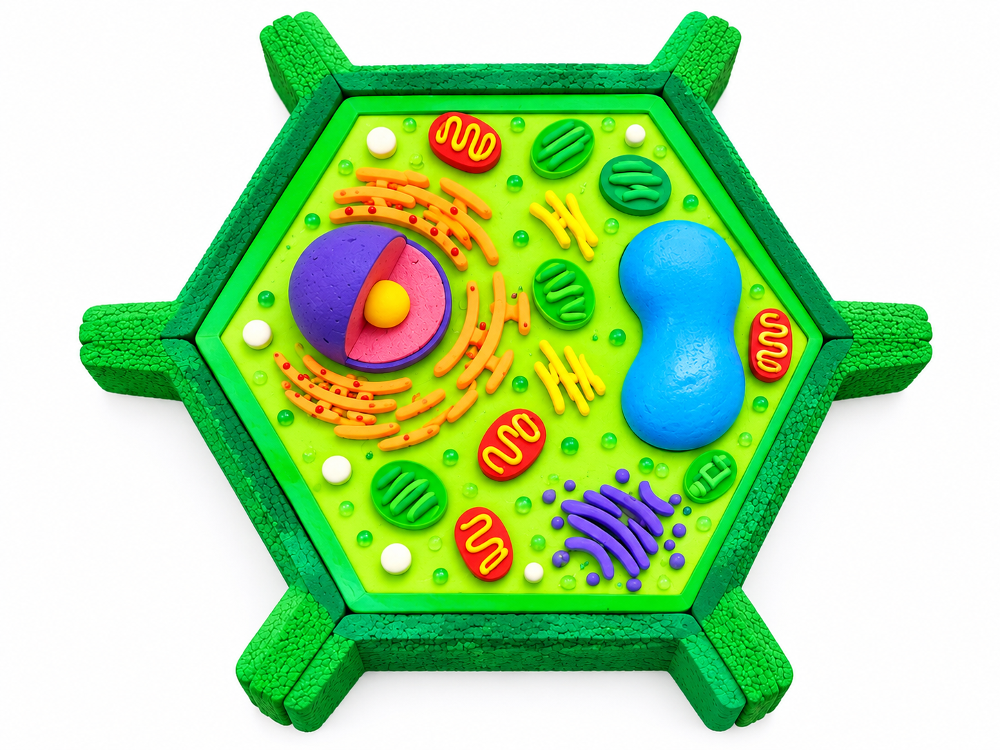

◈ MÔ HÌNH TẾ BÀO · GÓC NHÌN TƯƠNG TÁC
SẴN SÀNG KHÁM PHÁ

01—12 · CHẠM ĐỂ KHÁM PHÁ
KÉO ĐỂ XOAY · CUỘN / NÚT +/- ĐỂ PHÓNG TO
Mẹo: Trên máy tính, dùng chuột kéo để xoay; trên điện thoại, dùng một ngón tay. Chọn các điểm đánh số trên hình hoặc thẻ bên dưới để đọc nội dung.
Cấu trúc bao bọc Bào quan chuyển hoá Bào quan điều khiển & tổng hợp